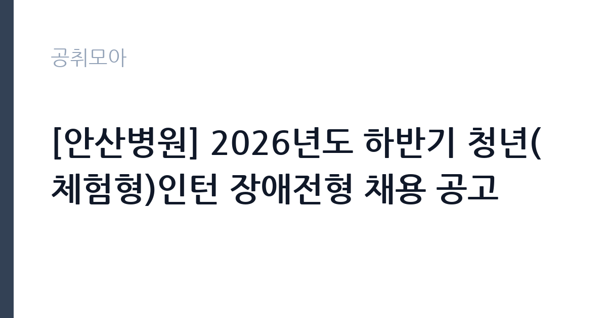

[공공기관] [안산병원] 2026년도 하반기 청년(체험형)인턴 장애전형 채용 공고
근로복지공단 · 경기 · 마감 2026-11-11 (D-7) · 출처 잡알리오

한눈에 보는 모집 조건
| 기관 | 근로복지공단 |
|---|---|
| 공고명 | [안산병원] 2026년도 하반기 청년(체험형)인턴 장애전형 채용 공고 |
| 고용형태 | 청년인턴(체험형) |
| 근무지 | 경기 |
| 게시일 | 2026-11-04 |
| 마감일 | 2026-11-11 (D-7) |
지원자격, 이렇게 읽으세요
- 이후 우리공단 청년(체험형)인턴으로 근무한 경험이 없는 자
- 임용예정일 즉시 근무가 가능한 자
- 학력 및 경력 제한 없음
체험형 인턴은 취업 준비생에게 직무 경험을 제공하는 단기 채용입니다. 근무 기간이 3개월에서 6개월로 정해져 있고 인턴료가 지급됩니다. 기관에 따라 수료증 발급이나 채용 시 가점 같은 혜택이 붙습니다. 이번 공고는 근로복지공단이 직접 진행하는 자체 전형입니다. 체험형 인턴은 청년, 장애인, 자립준비청년 같은 대상별 전형으로 나뉘는 경우가 많습니다. 본인이 어느 전형에 해당하는지 먼저 확인해야 하며 증빙 서류가 필수입니다. 재학생과 졸업생 지원 가능 여부, 연령 기준, 타 인턴 경험 제한 조항이 자주 붙습니다. 일부 기관은 인턴 근무 경력이 있으면 재지원을 제한합니다. 근무 기간과 인턴료, 수료 요건을 공고문에서 확인하십시오. 자격증 유효 기간과 등록 상태를 접수 전에 점검하십시오. 학력이나 전공 요건이 없는 공고라도 제출서류 목록은 그대로 적용되므로 서류 준비 부담은 줄지 않습니다. 응시 자격 판단이 애매하다면 접수 전에 채용 담당 부서로 문의하는 편이 안전합니다. 서류 제출 후에는 소명 기회가 없습니다. 이 공고 원문에 적힌 응시 조건 문구는 '학력 및 경력 제한 없음'입니다. 문구를 그대로 읽고 본인 해당 여부를 하나씩 표시해 두면 서류 단계에서 탈락하는 일을 줄일 수 있습니다.
이 공고의 포인트
이 공고의 첫 번째 포인트는 고용 형태입니다. 짧은 기간이지만 직무 경험과 수료 실적을 쌓을 수 있고, 기관에 따라 채용 시 가점이 붙습니다. 두 번째는 업무 범위가 명확하다는 점입니다. 체험형 인턴 직무로 채용되므로 배치 이후 담당 업무가 크게 흔들리지 않습니다. 세 번째는 근무지입니다. 경기 지역 근무로 접근성은 좋지만 그만큼 지원자가 몰리는 지역이므로 경쟁률을 넉넉히 잡아야 합니다. 자격 요건이 까다롭지 않은 대신 지원자가 몰리는 유형의 공고입니다. 같은 직무 공고 중에서는 접수 마감이 가장 빨라 일정을 앞당겨 잡아야 합니다. 선발 인원은 공고문에 명시되어 있으니 모집분야 항목을 함께 확인하십시오.
전형은 어떻게 진행되나
전형은 서류심사와 면접심사를 기본으로 하고 직무에 따라 필기나 실기, 체력검정이 추가됩니다. 서류 단계에서는 응시자격 충족 여부와 제출서류 형식을 확인하며 이 단계에서 탈락하는 지원자가 적지 않습니다. 면접은 직무 이해도와 경험을 확인하는 방식으로 진행되고 발표는 개별 통보나 홈페이지 게시로 이뤄집니다. 최종합격 이후에는 결격사유 조회와 채용 신체검사가 이어지며 이 절차에서 문제가 확인되면 합격이 취소될 수 있습니다. 구체적인 전형 단계와 배점은 공고문에 표로 정리되어 있으니 원문을 기준으로 준비하십시오. 자격증 취득 예정자로 지원했다면 취득 증명 제출 기한을 반드시 지켜야 합니다.
원문에서 확인한 전형 방식
ㅇ 「장애인고용촉진 및 직업재활법 시행령」제3조에 따른 장애인 ㅇ 『청년고용촉진 특별법 시행령』에 따라 원서접수 마감일 기준 15세 이상 34세 이하인 자 - 군 전역자(사회복무요원 포함)는 『제대군인지원에 관한 법률』 제16조에 따라 응시연령 상한을 다음과 같이 연장(1년 미만 1세, 1년 이상 2년 미만 2세, 2년 이상 3세) ㅇ ’25. 1. 1. 이후 우리공단 청년(체험형)인턴으로 근무한 경험이 없는 자 ㅇ 임용예정일 즉시 근무가 가능한 자 - 임용일은 공단 사정에 따라 변경될 수 있음 ㅇ 학력 및 경력 제한 없음
이런 분께 추천해요
- 해당 전형의 지원 자격을 충족하는 분
- 짧은 기간에도 배우고 기여하려는 태도가 있는 분
- 기관 업무에 관심을 갖고 사전 조사를 해온 분
지원 전 체크리스트
- 응시자격 요건과 경력 기준을 충족하는가 — 경력은 증명서로 입증해야 합니다
- 인턴 기간과 수료 요건, 지원 자격 전형을 확인했는가
- 제출서류 목록을 모두 준비했는가 — 누락 시 서류 단계에서 탈락합니다
- 접수 마감 2026-11-11 이전에 접수 방식을 확인해 제출했는가
모집 일정과 제출 타이밍
2026-11-04에 공고가 올라왔고 접수는 2026-11-11까지입니다. 남은 기간은 7일이며, 이 기간에 자격증 사본과 경력증명서, 주민등록등본 같은 기본 서류를 모두 준비해야 합니다. 경력증명서는 발급에 며칠이 걸리는 경우가 있으니 가장 먼저 신청하십시오. 접수는 온라인과 우편·방문으로 나뉘는 경우가 많고, 우편 접수는 도착 기준으로 판정되므로 마감일 소인만 믿으면 안 됩니다. 면접 일정은 서류 발표 후 개별 통보되므로 제출 후에도 연락을 받을 수 있도록 유지해야 합니다. 접수 첫날에 몰리면 시스템 접속이 지연될 수 있으므로 오전 시간대 제출이 안전합니다.
직무 이해하기: 공공기관
근로복지공단은 산재보험과 고용보험 사업, 근로복지 사업을 수행하는 준정부기관으로 본사는 울산에 있습니다. 전국에 지역본부와 지사, 산재병원과 직업재활시설을 운영합니다. 순천병원은 전남 순천에서 산재 근로자의 진료와 재활을 맡는 의료기관으로, 의료직·간호직·행정직이 함께 근무하고 산업보건 분야 전문인력을 별도로 채용합니다. 체험형 인턴은 정해진 기간 동안 실제 부서에 배치되어 업무를 보조하며 직무를 경험하는 자리입니다. 부서에 따라 문서 작성과 자료 정리, 데이터 입력, 행사 지원, 현장 업무 보조 등을 맡습니다. 인턴 기간 중에는 직무 교육과 멘토링이 제공되는 경우가 많고 결과 보고서를 제출해야 하는 프로그램도 있습니다. 근무 기간은 3개월에서 6개월이 일반적이며, 기관에 따라 채용 연계나 서류 가점 같은 혜택이 붙습니다. 업무 기록은 현장 확인과 사후 점검에 그대로 쓰이므로 기재 누락이 곧 평가 손실로 이어집니다. 현장 업무와 사무 업무의 비중은 기관의 사업 일정에 따라 계절별로 달라집니다.
자기소개서 작성 팁
인턴 지원서는 성장 가능성과 실행력을 보여주는 것이 핵심입니다. 부족한 경력을 감추기보다 배운 것을 빠르게 적용한 사례를 쓰십시오. 지원 기관의 사업을 조사해 구체적인 업무 아이디어를 제시하면 준비도가 드러납니다. 인턴 이후 어떤 직무로 성장하고 싶은지 방향을 밝히면 좋습니다. 직무 경험이 많지 않다면 경험의 양보다 과정을 구체적으로 쓰는 편이 낫습니다. 어떤 상황에서 무엇을 판단했고 어떤 결과가 나왔는지 순서대로 서술하면 신뢰가 생깁니다. 지원 동기와 기여 방안은 한 문단씩 짧게 유지하고, 가장 자신 있는 경험에 분량을 몰아주십시오. 마지막 문장은 포부보다 구체적인 실행 계획으로 끝내는 것이 좋습니다.
면접 준비 포인트
면접에서는 지원 동기와 배우려는 태도를 봅니다. 인턴 기간에 무엇을 얻고 싶은지 구체적으로 말할 수 있어야 하고, 학교나 아르바이트에서 맡았던 역할을 근거로 제시하면 좋습니다. 특정 업무만 하려는 인상을 주면 감점입니다. 기간이 짧다는 점을 인정하고 그 안에 무엇을 해낼 수 있는지 계획으로 답하십시오. 면접은 공고문에 적힌 직무 내용을 얼마나 이해하고 있는지 확인하는 질문으로 시작하는 경우가 많으니, 모집분야 문구를 그대로 읽어 두는 것이 도움이 됩니다. 직무 특성상 체력이나 근무 시간에 대한 질문이 나올 수 있으므로 솔직하게 답하고 관리 계획을 함께 제시하십시오.
급여·근무조건 읽는 법
알리오(공공기관 경영정보 공개시스템) 2025년 결산 경영공시 기준으로 근로복지공단 일반정규직 1인당 평균보수액은 6,828만원, 공시된 신입사원 초임은 3,664만원입니다. 평균보수액은 기본급에 고정수당·실적수당·성과상여금·급여성 복리후생비를 모두 합산한 값이라 월 기본급만 보고 판단하면 실제와 크게 어긋납니다. 체험형 인턴은 정규직 보수 체계가 아니라 별도 인턴료 기준을 적용받습니다. 체험형 인턴의 보수는 기관이 정한 인턴료 기준을 따르며 월급 또는 일급 형태로 지급됩니다. 인턴료에 식대나 교통비가 포함되는지 별도로 지급되는지 확인해야 합니다. 4대 보험 가입 여부와 근무 기간도 함께 확인하십시오. 구체적인 금액은 공고문에서 확인할 수 있습니다. 2026년 적용 최저임금은 시급 10,320원, 월 환산 2,156,880원(주 40시간·209시간 기준)입니다. 고용노동부 고시 제2025-47호로 확정된 금액입니다. 공고문에 금액이 제시되지 않은 항목은 원문 보수표나 처우 설명에서 확인해야 하며 확인되지 않은 수치는 쓰지 않는 것이 원칙입니다. 비교할 때는 월 급여뿐 아니라 상여·명절휴가비·복지포인트·초과근무수당까지 포함한 연간 총액으로 계산하십시오. 기간제라면 계약 기간 동안의 총액을, 무기계약이라면 호봉 상승과 정년까지의 누적 소득을 기준으로 판단하는 편이 정확합니다.
자주 묻는 질문
- 선발 인원은 몇 명인가요?
공고문의 모집분야 항목에 직종별 인원이 표로 제시되어 있습니다. 첨부된 공고문 원문에서 확인하십시오. - 근무지는 어디인가요?
경기 지역의 근로복지공단 소속 근무지입니다. 세부 주소와 출퇴근 조건은 원문 공고문에서 확인할 수 있습니다. - 보수는 얼마인가요?
채용 신분(체험형 인턴)과 기관 임금 규정에 따라 정해지며 구체적인 금액은 공고문 처우 항목에 제시됩니다. 금액이 공개되지 않은 경우에는 원문의 보수표를 확인하십시오.
함께 보면 좋은 공고
[공공기관] 한국농어촌공사 영산강사업단 공무직(청소원) 보훈 장애 제한경쟁 채용공고 — 마감 2026-11-20[공공기관] 2027년 1차 박사후연수연구원, 석사후연수연구원 및 위촉연구원 공개채용 — 마감 2026-11-20[공공기관] 서울대학교치과병원 2027년 상반기 정규직(원무직) 채용 공고 — 마감 2026-11-18출처: 잡알리오 공개정보를 바탕으로 공취모아가 정리한 안내글입니다. 모집 조건·일정은 변경될 수 있으니 지원 전 반드시 원문 공고문을 확인하세요. 본 글은 정보 제공용이며 합격을 보장하지 않습니다.